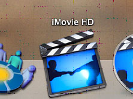

Using
Elements of an iMovieVideo Clips – these are video clips which you can import into your iMovie project. You can get video clips by downloading saved video off a camera, or live recording from a computer webcam; you can also import video which you already have stored on your computer. Today, we will be working with pre-made video clips, so that everyone can have a standard output when the lesson is complete. Audio Clips – Audio is the second big half of your iMovie project – sound often helps to set the mood of a movie or scene. Similar to video clips, audio can be downloaded from a recorder, recorded live through the computer’s microphone, or imported into a project – we will also be importing our audio today. Titles – Titles are not imported into projects, like audio/video clips. iMovie provides an interface for inserting titles into videos, to introduce a new scene of a movie, or simply to stick the name in at the beginning. Transitions – Transitions are the effects you see on television between scenes – usually this is just a simple fade from the end of one scene to the beginning of another. iMovie has many different transition options which you can insert between scenes, but we will primarily be working with fade, as it is the cleanest transition. Let's open the iMovie program and become familiar with the interface. Open iMovie - it looks like the icon shown below.  |